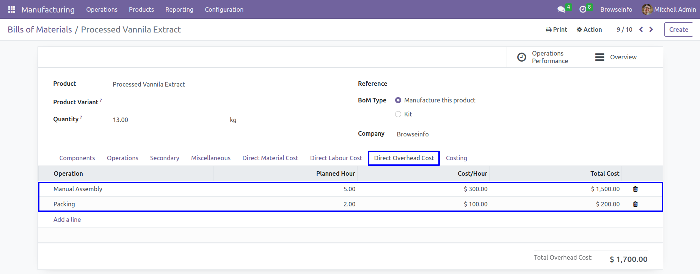

Features
Add Material, Labour and Overhead Cost. .
Customer can add direct material, labour and overhead cost in bom. .Pass Material, Labour and Overhead .
Pass material, labour and overhead cost values from selected BOM.
This app only works for enterprise edition.Manufacturing Process Costing with Secondary Products in MRP odoo apps helps user to produce secondary product alongside with finished products in manufacturing order also it allows to finished manufacturing order with different quantity then plan quality of production order with different secondary outputs as configured on bill of materials. This apps also support to calculate process costing of manufacturing and its workorder process with define labour cost and overhead cost from work center for main finished goods and Secondary goods. First production user can configured BOM with secondary product outputs which means this product will come as secondary by-products when manufacturing order will finish. User can see total planned costing and actual costing for final output and Secondary outputs with material costing, overhead costing and labour costing with different costing methods.
This odoo apps mostly use for food manufacturing industry with costing operation where user don't know what will be actual finished good quantity after finished the manufacturing order and finished goods comes with several different outputs/secondary finished goods. By default Odoo doesn't allow to record production for more or less than plan produce quantity with multiple finished goods which consumed planned materials. Our this odoo module solved that problem so production user can record produce quantity as per actual output they receive after that production along with secondary finished goods, which consumed material as per plan quantity . If you have multiple work order on manufacturing order then change qty option and secondary output product selection appears on the last work order screen so once you finished the record production it will logged added finished goods quantity and finished manufacturing order. This apps also support process costing for BOM and Manufacturing order both for finished goods and secondary products which shows planned total costing and actual total costing including material costing, overhead costing and labour costing
Looking for Manufacturing Process Costing with Secondary Finished goods for Enterprise Edition, please check below app link
Manufacturing Process Costing with Secondary Finished goods Odoo App.
Process Costing Configurations
User can select manufacturing process costing method as "Manually" or "Work-Center" under Manufacturing > Configurations menu.
Manually Process Costing for BOM and MO
Bill of Materials
If process costing configuration is "Manually" then user have to add all costing data manually, user can see that direct material cost automatically added based on components of the Bill Of Material.
If you want to add direct material cost manually then you can also add.
Add Secondary Product
Bill of Materials - Direct Material Cost
Bill of Materials - Direct Labour Cost
You can configure Direct Labour Cost on Bill of Materials.
Bill of Materials - Direct Overhead Cost
You can configure Direct Overhead Cost on Bill of Materials.
Bill of Materials Costing
Here you can see total cost of Material,Labour and Overhead.
Create Manufacturing Order
When you create manufacturing orders from BOM then selected BOM's Direct Labour Cost and Direct Overhead Cost will be filled automatically on manufacturing order.

Manufacturing Orders Costing
Here you can see total cost of Material,Labour and Overhead. .
Create Manufacturing Workorder
By clicking on "Plan" button,Work order will be created.
Workorder Form View
User have to click "Start Working" button on manufacturing workorder form view.
Validate Secondary Product
On work order processing user can enter more or less quantity then quantity to produce and also can see and enter produced secondary products quantity and click on "Done" button.
User can see produced secondary product with manufacturing product, and actual costings.
Inventory Moves
User can see generated inventory move for manufactured product and secondary product.
Automated Work-Center Process Costing with Real Time
Process Costing Configurations
User can select manufacturing process costing method as "Manually" or "Work-Center" under Manufacturing > Configurations menu.
Work Center Configurations
User have to enter "Overhead Costs per hour" and "Labour Costs per hour" in work center, and all the costing lines will be added automatically in bom based on actual costing fields of work center.
Bill of Materials
Add Secondary Product
User can also add manufacturing secondary product.
Bill of Materials - Direct Material Cost
Here you can see that direct material cost automatically added based on components of the Bill Of Material.
If you want to add direct material cost manually then you can also add.
Bill of Materials - Direct Labour Cost
You can configure Direct Labour Cost on Bill of Materials.
Bill of Materials - Direct Overhead Cost
You can configure Direct Overhead Cost on Bill of Materials.
Bill of Materials Costing
Here you can see total cost of Material,Labour and Overhead.
Create Manufacturing Orders
When you create manufacturing orders from BOM then selected BOM's Direct Labour Cost and Direct Overhead Cost will be filled automatically on manufacturing order.
Direct Material Cost will be filled automatically based on Consumed Materials of manufacturing order.
If you want to add direct material cost manually then you can also add.
Manufacturing Orders Costing
Here you can see total cost of Material,Labour and Overhead.
Create Manufacturing Workorder
By clicking on "Plan" button, Work order will be created.
Workorder Form View
User have to click "Start Working" button on manufacturing workorder form view.
Validate Secondary Product
On work order processing user can enter more or less quantity then quantity to produce and also can see and enter produced secondary products quantity and click on "Done" button.
On manufacturing order under "Finished Products" tab user can see secondary products alongside with finished product.

Inventory Moves
User can see generated inventory move for manufactured product and secondary product.
Bill of Materials Report
Here you can print report for Bill of Materials.
BOM Report View
Manufacturing Orders Report
Here you can print report for Manufacturing Orders.
Manufacturing Report View
Most Demanded Apps


At BrowseInfo we offer end to end solution for Odoo services. Which includes analysis & consultation on the workflows and integration part. Please note that You're not allowed to distribute this module after purchase! Incase of any question regarding this module feel free to email us on ticket@browseinfo.in or raise a ticket on support.